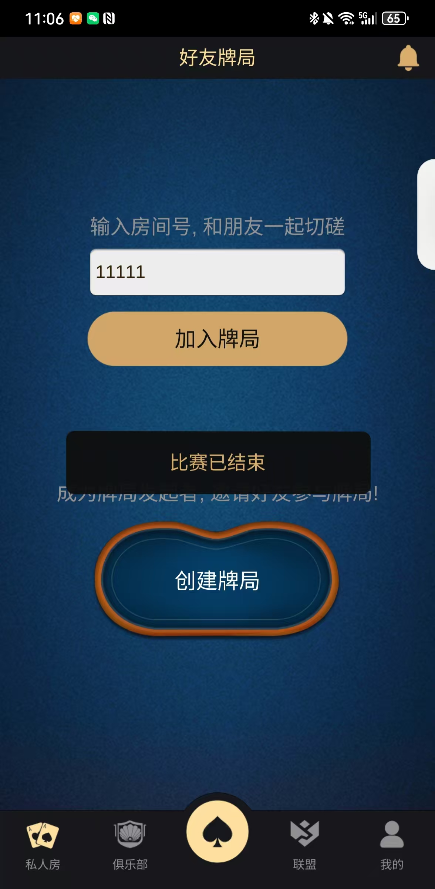

Private Table · Friend Game
面向固定玩家的好友局和私人桌场景，覆盖邀请与房间入口、实时牌桌、C++ 服务、通信、数据与战绩流程。
好友局界面用于邀请固定玩家进入私人房间。
牌桌承担下注、跟注、加注、弃牌、保险和结算等流程。
README 说明自动 Buy-in、Straddle 和保险等扩展，以当前代码和配置为准。
MySQL 与 Redis 数据层，以及玩家资料、战绩和排行榜场景。
部署或运营前必须核对授权、支付、数据保护、年龄限制和当地网络游戏法规，并完成安全及公平性审计。
查看俱乐部系统 · 查看完整源码专题 · GitHub 仓库